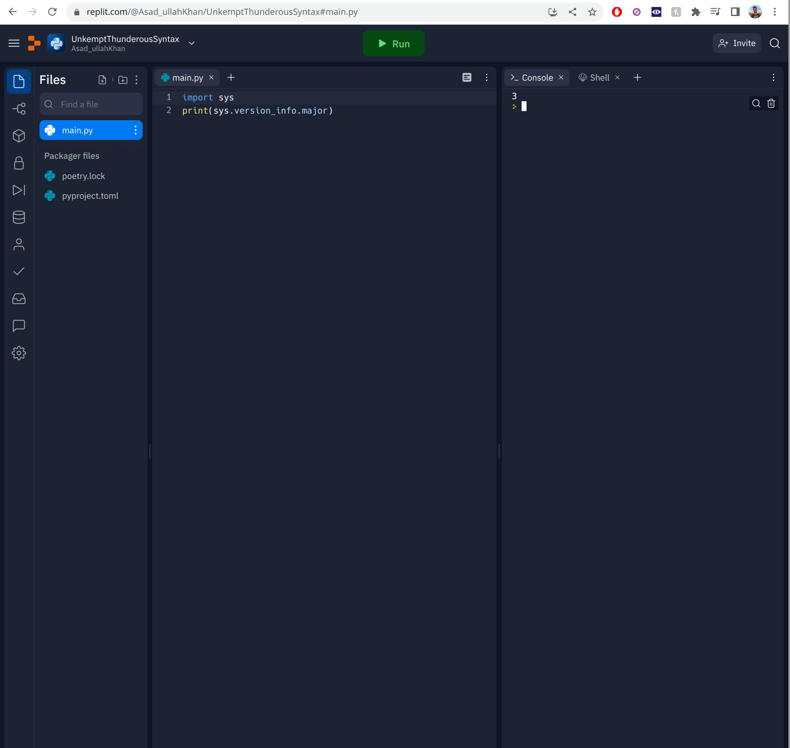

Introduction
Hello, and welcome to a guide I am making for anyone interested in learning programming.
This guide will (eventually) contain pretty much everything I know about programming, and will continue to grow and improve as that knowledge expands
Why make this?
I am making this for a few reasons:
- People ask me all the time "how do I learn programming", or "what are some good resources to learn programming", or "can I learn programming for free". I want to be able to point these people to a resource I trust
- A lot of programming guides and tutorials online are not comprehensive unless they are paid for. Many resources online are great but are usually not up to date and way too language specific
- I feel a lot of despair in the programming community about concepts that quite frankly should not be that difficult to teach, yet are still a pain point for many. This results in people discounting large portions of computer science/software engineering as "useless", and lots of frustration ensues
- Colossal amount of blatantly wrong information and "guides" on the internet, especially on social media (instagram is the worst offender)
- A way to keep things I have learned in one place
Basically I want to help people learn with a methodology that I believe in, with a source that I can control and change as I see fit
Why should you read this?
Honestly, I have no justification. I am not an expert at programming; I am pretty good, but there is still much for me to learn. I am also not an expert at teaching, nor do I have any experience in that.
What I do have is a passion for programming, and I was lucky enough to have some good teachers early on, so some of this will contain their knowledge. The rest will come from my experience and what I feel is important to teach, in an order that I think is unique and effective.
Who should read this
- You know how to use a computer to a basic - intermediate degree
- You need to know copy paste, right click, navigate and use the computer
- You don't need to know what a kernel is, how the internet works, or what processor architecture you have currently
- You have an interest in learning programming and want to start now
- You have anywhere from complete ignorance to total and complete knowledge of programming
- Feel free to skip around if you feel the beginning sections are too basic
- You have access to a web browser and an internet connection
- Not a single part of this guide will require a local work environment, with the sole exception of the section on developer environments, which is an important topic which will require some sort of local filesystem (so not really possible on a chromebook for example)
- If you don't have access to this that is OK, but I really do recommend it
- You have a willingness to work through challenges and difficulty
- Anyone can learn programming, and I don't think it is that difficult to do so. However, writing good software is hard, like really hard. Sure, you can create something that works, but that is very different from a masterfully architected, scalable, and elegant solution.
- It is very easy to confuse the two: just because you learned something does not mean it will be easy to apply it. I will try my best to give you the tools and knowledge to make this possible, but it will require your effort in the end
- You are willing to trust the process, at least to a certain degree
- I mentioned earlier that the order of this guide is a bit strange compared to most tutorials, but I want you to follow it in order if you are a beginner
Pedagogy
Here I will explain some of the choices that I made with regard to this guide. This section is not part of the guide so you only need to read this if you are curious about my methodology.
Language order
On first glance, the order of languages chosen seems a little bizarre. Python first makes total sense, but C next? Isn't that an "advanced" programming language? Also, isn't Java beginner friendly, shouldn't we be learning that first?
Here is my explanation:
- Python: this is a great first language. It has very few pitfalls, is easy to pick up, and can let beginners feel the "joy of programming".
- Another huge advantage is that I can teach a huge part of this language without doing the "you'll learn about this in depth later so just take it at face value for now" thing which I really hate. I will have to do that a few times as it is unavoidable, but learning Python first really mitigates that
- Python has few pitfalls, but is not completely devoid of them, so there may be slightly better choices, but I am really experienced with Python so it makes sense to me to use it
- C: this is the weird one. The core reasoning behind this is due to what C and Java are supposed to teach
- Here is what I am using each to teach, which is pretty common in general as well:
- C is to help people learn low level concepts and create a core understanding about how a computer works and how languages interact with the computer
- Java is to help understand OOP and software design
- My key takeaway after learning these languages in the opposite order many years ago is this:
the concepts in C are deceptively easy to learn, while the concepts in Java are deceptively difficult to learn
- Computer internals may seem intimidating at first but are really straightforward to understand at a medium-high level and give an excellent baseline to learn other languages that abstract over these concepts
- Software design is very different: it is hard to understand properly, hard to apply, and the best practices are changing rapidly all the time. OOP may seem easy at first to beginners: "just make correlations to real world objects". But this methodology completely falls apart in the real world and results in some really, really bad design that can frustrate newcomers to the field
- Here is what I am using each to teach, which is pretty common in general as well:
- Java: this may also seem strange given its age, but it is still one of the most in demand languages, and is pretty simple when it comes to software design
- Other languages have too many sophisticated features that can clutter understanding
- Learning C first means we don't need to be confused by objects vs primitives and whatnot
- A kind of underrated language these days: everyone hates on it (I used to as well), but I have come to appreciate its simplicity, even if it is a bit verbose
- The newer APIs in the language are also a big boon
Avoiding the "we'll come back to this later" phenomenon
I mentioned earlier that I really hate this phrase in tutorials: it can be hard as a learner to just ignore the fact that you are using something you can't fully understand. As stated, I can't totally avoid this, but I will try very hard to reduce this phrase as much as possible. Here are the ways I will mitigate this:
- Python first will allow us to get the basics down without much trouble
- I will try to give high level explanations that will allow you to "black box" things effectively
- I will go in depth right at the spot as much as I can without it being too tiresome
Other goals and general ideas
- I want to make this easy to read and not tiresome
- I want to make it approachable and not intimidating
- I want to make it fluid when reading but still work as decently as a reference
- The main focus is straightforward reading, as maintaining a reference is difficult, but I want people to be able to come back to certain sections if there is something they forgot or want to reread
- I do not want people to just memorize things and move on, so I will make that as hard as I can by giving as few things to memorize as possible
- I do not want large code sections, especially not at the beginning
- I want to discourage copy/paste as much as possible
- Also newcomers tend to glaze over when seeing a wall of code
- Hell, I feel my eyes start to glaze over sometimes :)
- I do not want a tutorial "feel" to this guide. Tutorials are kind of bad as they are perpetually out of date and tend to encourage copy/paste as well as lack of understanding
- Instead, I want people to learn and understand core concepts and be able to apply them freely to their own projects
Do's and Dont's
Here I will outline some things to note before we get started
DO make an issue if you see a mistake or can't understand something
Open an issue here (make an account if you don't have one): https://github.com/Kh4n/kh4n.github.io/issues
Please, please do not hesitate to raise an issue if you see a problem or have trouble understanding something. I will address issues quickly because it would be bad to have misinformation in a guide meant for beginners. As for trouble with understanding, that clearly means a problem with my guide, so after I attempt to explain it, I will update the guide to hopefully be more clear in the future.
DO NOT get scared or tell yourself "I can't understand this" when I say something is complicated
Anything worth learning is complicated. At some point in your life, just talking was complicated. Now you can do it almost without thinking. The same will be true of concepts in this guide: they will be challenging at first, but you'll get them soon enough, and when you do they will seem very easy.
DO NOT focus on the "what", focus on the "how" and "why"
This is also a general piece of advice, not just limited to your approach to this guide. The field of software engineering changes extremely rapidly, especially compared to many other fields. It may seem easier at first to just learn the "what" and ignore understanding things at a deeper level, but if you do this you will be chasing the "what" for the rest of your life, and programming will be a chore that you hate.
What do I mean by this? If you try to just memorize concepts and spit them back out, you can get surprisingly far. But it will take you much longer than if you just struggle a bit at the beginning to learn things with understanding, and then apply that understanding to understand "how" and "why" things change the way they do. You will find that many of tools and languages out there have a ton of similarities, and knowing why these exist is key to learning things fast.
This is why experienced programmers find the question "how many languages do you know?" funny: I know many programming languages, more that I can list, even ones I have not touched in years. Why? Because I understand programming, not programming languages, and languages are just a tool. It is not difficult at all to reach this level either: in fact as I mentioned earlier, the sooner you start with this mentality the better and faster you'll learn. You'll surprise yourself with how easy it is to pick up each successive language after you learn the first few.
Compare this to memorizing features and patterns in languages: these will change from language to language, library to library, and every time you want to learn something new you will have to start from scratch. That does not sound fun.
DO take breaks and have fun
There is no need to read this through in one sitting (and then promptly forget its contents). Take breaks, experiment around with the code, take longer on a section you like more, etc. There is no need to be rigid. It is better that you enjoy what you are doing, that way you are more likely to finish it instead of giving up halfway through.
DO NOT overly copy and paste
Unless I explicitly say so, do not copy and paste code. Type it out manually, every time. Trust me. It will improve your coding speed and confidence drastically.
DO NOT learn other languages until you have finished the Python and C sections
There is a reason I chose these languages first, as I believe they are an excellent baseline for learning and understanding a very large number of existing programming languages. If you must learn something else, I implore you to stay far, far away from the languages I am about to list:
- C++: absolutely do not touch this beast. You do not understand it, you will not understand it, and most importantly, you will have the delusion that you do understand it when in reality you don't. This is easily one of the most complex and difficult to master languages ever. Don't let the two pluses confuse you: this is more than just a step up from C, it is truly advanced and deep, and filled with difficult to understand concepts while having little to no safety rails and guards. I myself tried to learn this language early on, and it was a huge mistake. I would stay far away from this until you feel you have mastered Java. I may eventually make a guide, but I am not confident with it, which is really saying something as I have been using it longer than C
- Rust: this is a great language, one of my favorites. But if you try to learn this before understanding what a language memory model is, and why resource allocation is hard, you will suffer. None of the concepts will make sense, and you will want to murder the compiler. Which would be a damn shame, because the Rust compiler might actually be the most user friendly and insanely good compilers of all time, but you really won't be able to appreciate it before learning C
- JavaScript: this might come as a surprise, as a lot of people say it is good for beginners, even going as far as recommending it. I sincerely believe that this is one of the worst languages ever created, especially if you consider how much it is used. It is filled with pitfalls, is not easy to set up in practice, and is all around frustrating for beginners. Stay away. If you must, learn TypeScript instead (everyone uses that these days anyway). Stick to Python for your day to day needs
- PHP: just...don't. Trust me. You sincerely have no use for this language at this point
- Any super old language (Cobol, Fortran, etc.): it is not worth your time at this point. Stick to the basics, you can always come back to these
- Haskell: this is a language that is very cool and also important to learn to a certain level, but again: not right now. Learn the basics, then come back and understand what a monad is and how you have actually been using it forever without actually knowing what it was called :)
DO NOT treat this as a Python, C, or Java guide
I am using those languages as tools to help us learn key programming concepts. I will not be going super in depth for any of them, and you should look online for supplementary knowledge after you finish the guide for which language(s) you want to learn. Java will probably be covered the most thoroughly, simply because we have learned enough of the basics at that point. All of the OOP available in Python will be skipped, as we are waiting until Java to learn that. Same with list comprehensions and whatnot: just waiting until we have a little more experience.
DO NOT get frustrated if you learn one thing easily, but the next thing is hard
Different people learn things at different rates. You may excel at design and debugging, but suck at data structures and algorithms. There is nothing wrong with that; you are not a worse programmer because of it. Just make sure you understand both, and when you are actually on the job or working on a project you will have people you can rely on that are better at things you are not so good at. This is why we work on teams.
It is still important to know all aspects of programming, mainly because if you skip things you will never know when something you are working on is actually more complicated than you are treating it, or that you are making a design mistake that is gonna bite you months down the road, and bite you hard.
Just don't let it impact your confidence :). You can learn programming.
Basics
Here we will learn the basics of Python as well as programming in general. What is a keyword? What is a function? What is a variable? Things like that. Read on to get started.
Hello World
Ah, the pinnacle of programming. Every programmer starts with a "hello world" program, as will you. Let's get started.
Setup
Here I will be making a shift: many tutorials start with an agonizing development environment setup that can suck the joy out of many a beginner (or even experienced) programmer. Instead, we will be using the glory of an Online IDE. Fear not, it will have all the features you need, will be fully setup, and can be accessed from anywhere you have a browser.
You are free to use any online IDE, but I strongly recommend Replit, as it is free and easy to use. Sign up, create a new Repl, make sure to select Python. It should be Python version 3. You will see a code editor on the left. Here is what mine looks like (it may look different): 
You see I have some code in the left side:
import sys
print(sys.version_info.major)
Paste this in to whatever IDE or editor you are using, Replit or otherwise, and ensure that after you run (the green "Run" button in the case of Replit) the console on the right outputs a "3". This is to make sure we are on Python 3, and not 2. If you get an error, you are on the wrong version.
Ignore the other files that are there, and do not open them or edit them. They are not relevant.
IMPORTANT: As a note to yourself for the distant future: do not ever write proprietary code in an online IDE, or any code that you want to own yourself. It is not safe from a legal or security standpoint, please do not do it. I will show you how to properly set up your environment locally later on, and it is not even that hard. It's just that right now I want to get you started as quickly as possible, and this is the best way to do that. The code you will write as a beginner will not be so important that you need to copyright it, but in the future it may be.
Now that you are on the right version, delete that code and pretend that you never ran it, because now we will write our first legitimate piece of software.
The actual code
In the editor, type:
print("Hello World!")
and hit run. You should see the words printed on the right like so:
Hello World!
This output area is known as the console. Later on we will discuss what is going on in more depth, as even a simple hello world program has much to be explained. Suffice it to say, the console is where you will see your program output, as it is (usually) very easy to output text to it in most languages, Python included. In fact, in Python it is only one line as you can see here.
What just happened?
So what is going on here? Let's go through them one by one:
print("Hello World")
print: this is a function which tells the computer to output text to the console"Hello World": this is called a string, which we need to surround with quotes. The reason we need to surround this with quotes will become apparent in a moment when we introduce variables.
Experiment!
Before we go into functions and variables, feel free to experiment around and change the string's contents. Only add alphanumeric stuff for now (A-Z, a-z, 0-9). Like so, for example:
print("Hello <your name>")
Feel free to substitute your name in here.
IMPORTANT: Whenever you see something like <put stuff here>, that means replace that entire thing with what you want to put in, including the angle brackets. For the example above, if your name was Khan, you would put:
print("Hello Khan")
and not
print("Hello <Khan>")
This is a common pattern across many guides and documentation in general so remember it. You may see the angle brackets replaces with square brackets ([]) or braces ({}). The rule remains the same (almost always).
In any case, for every section, feel free to tweak the examples a bit IMPORTANT: Be sure to copy and paste these examples for now, as I do not want you to have errors yet. We will get into those shortly as well. If you get an error while experimenting do not worry about it, things will make more sense as we go.
Variables
Before we get into functions and how to understand them, lets explore variables a bit. Copy and paste this next piece of code:
ourStr = "Hello World!"
print(ourStr)
You should see:
Hello World!
as expected. So it should now be clearer as to why we need quotes: when something does not have quotes, it means something different, in this case a variable.
Going through the first line:
ourStr: this is the variable we are assigning to=: the assignment operator. Tells Python "we want to assign something""Hello World!: the value we want to assign
In this example we took a string and stored it the variable ourStr. You can visualize it like so:
ourStr is a kind of container for the value of "Hello World!". It is not "Hello World!" itself. That is an important distinction. We can have multiple variables with the same value:
ourStr = "Hello World!"
ourStr2 = "Hello World!"
print(ourStr)
print(ourStr2)
Output:
Hello World!
Hello World!
We can also reassign the variable:
ourStr = "Hello World!"
ourStr = "Hello World again!"
print(ourStr)
Output:
Hello World again!
We will learn more about variables as we go along, but in python they are truly quite simple and straightforward as you see here.
More on Variables
Let's learn a bit more about different values variables can take, namely their types, as well as a bit about functions.
Variables and Values
Earlier we assigned a string to a variable:
ourStr = "Hello World!"
Next, lets try a number and a boolean. Run the following code:
a = 2
b = True
print(a)
print(b)
Output:
2
True
We can do operations on these values as well, try this:
a = 3 + 3
b = a - 10
print(b)
Output:
-4
Try experimenting with other math expressions! For booleans, here are some examples:
a = True
b = False
c = a or b
d = a and b
e = a and not b
print(c)
print(d)
print(e)
Output:
True
False
True
This should make logical sense: True or False (either needs to be true) means True. True and False (both need to be true) means false. For e, we negated the False, making it True, thereby following the same logic as c. Don't think about these too much: boolean expressions make more sense over time and in general do not get very complicated.
What about strings?
Well, strings have operations as well:
a = "Hello"
b = " World!"
print(a + b)
Output:
Hello World!
There are more, but we will get into those after we learn about functions
Variables are important, but the next section which talks about functions is even more important to understand. I had to introduce variables first though, as it would be cumbersome to explain them at the same time as functions.
Functions
Functions are, in my opinion, the most important thing to understand when it comes to programming. Thinking about things in terms of functions can help immensely as you go along. The good news is that they are quite easy to understand.
The print function
I could jump in and try to explain this function, but I think it is actually better if we take a slight detour and make our own function first, and then come back to this
Your first function
Copy and paste this into your editor and hit run:
def add(a, b):
return a + b
num1 = 12
num2 = 5
output = add(num1, num2)
print(output)
Output:
17
Whew! A lot going on here. Let's break it down line by line again:
def add(a, b)def: this is what we call a keyword, or a reserved word. It tells Python that we are about to define a functionadd: this is the name of our functiona, b: this is a comma separated list of parameters to our function which serve as variables we can access in the body of the function
return a + b: this is probably the weirdest part.returnis another keyword, which serves to tell Python that we want to output the expression after it back to whoever called the function. We cannot add any more lines after this, which makes sense because we have already output something back to the useroutput = add(num1, num2): here we called our function with the variables we made earlier, and assigned its output to the variableoutput
This is quite a bit, so make sure to take it all in. Essentially, to make a function, we need to:
- Give it a name
- Give it some parameters, any number (even none at all!)
- Give it a body where we do some stuff
- Optionally return a value
These are all valid functions:
def subtract(a, b):
return b - a
def sayHello():
print("Hello")
def areaOfTriangle(base, height):
return (1/2) * base * height
Note that the code in the function does not execute until we actually call it, which we do by adding a set of parentheses enclosing our arguments. This is an important distinction! When the variables are in the first set of parentheses after the function name (the def part), commonly referred to the definition of the function (hence the keyword "def") they are called parameters, but when you use variables or values to call a function, they are called arguments.
How to visualize functions
I recommend using a "black box" method. That is, think of the function as a black box which takes some input and magically spits out something. So our add function might look like this:

It is not important for anyone else to know what is happening inside the function, all they know is they put two numbers in and this function adds them. This is an important reoccurring concept. For this case we know exactly whats happening because we wrote it, but if you are reading someone else's code you can take their (hopefully descriptive) function name at face value. Now you might be thinking, what does the print function black box look like? Maybe something like this:

This is wrong! I will explain why.
Back to our friend the print function
So why was the above visualization wrong? Well remember how I said functions have outputs? Let's see what the output of print is:
def add(a, b):
return a + b
out = add(2, 3)
print(out)
out = print("Hello World!")
print(out)
Output:
5
Hello World!
None
Huh??? What is None? Why was that the output of print?
Let's start with the None thing: Python has the concept of a value that means "nothing", or that "there is no value". This may sound weird at first until we consider the fact that this is super useful to have and exists everywhere:
- Numbers have a 0, because we want to know when we have 0 of something, just like when we have 2 or 200 of something
- The languages we speak all have words for "nothing", because again, we need to know when we have...nothing! It would be weird and hard to understand if there was an empty pause every time we meant to say nothing
Now, why was the output None? Well that is because print actually does not output (return) anything. We can make a function ourselves that returns nothing to prove this:
def nothing():
return None
output = nothing()
print(output)
Output:
None
In fact, in Python, if we do not have a return statement, or simply leave the expression after return blank, it automatically makes it return None. Note that this is a language specific thing, and not every language operates like this. Here is an example:
def nothing():
return
out = nothing()
print(out)
Output:
None
So if print does not return anything, why is there output in the console?
Additionally, why do our functions that actually return things not show up in the console? Why do we need to use print afterwards?
So here is where the black box analogy can struggle: the print function actually affects things outside of the function itself. Basically, unlike our add function up there which was only touching the a and b variables it defined, the print function affected things that were not in the input, and used those side effects to make things appear in our console. If that sounds confusing, don't worry, it is a bit tricky. But basically, we can instead visualize our print function with the concept of hidden inputs and outputs:

For now, don't worry about how it actually shows up to the console, or where this hidden output is. You'll learn about that in later sections. Many times people just forget about this way of visualizing functions because of this inconvenience. However, I promise it is worth it to use this slightly weird concept of hidden inputs and outputs instead to make the visualization work.
For now, just know that:
printdoes not return anything- Even though it has one input, there are other things it is affecting
- You can visualize those other things as hidden inputs/outputs, even though Python does not actually have the concept of hidden inputs and outputs
Wow! Functions sound like a real pain! I think I'll avoid them...
NO! Functions are way to useful to let some new keywords and hidden inputs/outputs to scare you away. They let you define things in one place and use them over and over. The add example seems pointless, but that is because Python gives you a builtin add function, the +, so it is kind of redundant. But if we were doing something even slightly complicated like the area of a triangle function I wrote earlier, we can reuse that logic over and over to save ourselves time and make our code cleaner and easier to maintain:
def areaOfTriangle(base, height):
return (1/2) * base * height
vol1 = areaOfTriangle(4, 10)
print(vol1)
print(areaOfTriangle(3, 4))
Output:
20.0
6.0
This is still pretty basic, but it is easier to read, and most importantly if we ever need to change the logic for areaOfTriangle, its already all in one spot which makes things easier.
There are many, many more advantages functions have, and as we progress they will become apparent
Some Examples
We just went over a lot, so I will go through some examples here to try to solidify the concepts a bit more. Even with the elementary things I just showed, we can still do a lot!
Comments
Before we get started, I wanted to discuss one more feature pretty much every programming language has, Python included: comments!
Here is an example:
# this is adding two numbers together (duh?)
what = 1 + 1
The comment is completely ignored by Python! It will not affect the program. You may be wondering why is this useful, here are a few reasons:
- Lets you write a note that explains what a line, function, or piece of code does:
# computes the volume of a cylinder with radius a and height b, approximated to 2 significant figures
def someFunction(a, b):
# 3.14 is an approximation of PI
return 3.14 * a * a * b
- Lets you "toggle" a line of code for debugging purposes
a = 1
b = 2
b = b + a + 3
# rather than delete this line and have to retype it, I can just comment it out temporarily
# b = a + 4
print(a + b)
Output:
7
- Documentation of code. I won't show an example right now as it is out of scope, but basically documentation of what the code does is very often done in the comments of the code, and an external tool then takes that code and turns it into a little website of sorts that can be used as a reference for other developers
These examples may seem kind of pointless right now, but imagine if you are in a codebase with thousands of functions and millions of lines of code (tons of these exist); you'd really want to be able to know what some part of the code does without having to read every line. Even in a small codebase it is very useful. Also, just because you are the sole author/contributor doesn't give you a license to stop commenting: you should still comment in case:
- Another person needs to take over your code or join in
- Another person needs to interface with your code
- You want to understand what the hell you wrote 10 months down the line :) You'd be surprised how easy it is to forget!
Examples
Ok let's go. Feel free to read through and copy paste which ones you find interesting; you do not have to run everything, just read through and take note of anything interesting
# let's get some comment etiquette out of the way
# this is the correct place to comment, above a line of code
a = 3 + 3
a = 3 + 3 # do not comment after a line, it is harder to read, and many style guides have strict line length limit (120 is typical)
# I will often put comments on the same line in my examples just to make it clear what I am referencing
# do as I say, not as I do :)
# remember that functions do not need to have parameters:
def sayGoodbye():
print("goodbye")
def sayHelloBefore(string):
print("Hello " + string)
# the pass keyword does nothing, helpful because Python requires every function to have a body but sometimes we wan't something empty as a placeholder as we fill things in
def empty():
pass
ret = empty()
# Output: None
print(ret)
Errors
Up until this point I have asked you to copy and paste all of the examples in to you editor. The reason for this is that I was not ready to introduce the concept of errors yet, which is when your program does something wrong and the computer tells you that you messed up somewhere. After this section, I will all but stop telling you to paste from the guide. Please type out every example unless I explicitly tell you otherwise.
Many programmers dread errors in the their code. I'm here to tell you that you should not fear errors at all; in fact they can be incredibly useful: the computer is your friend, telling you where you messed up, many times before you even ran your code.
Our first error
Let's cause an error:
print("hello world) # oops! forgot a closing quote
Type this into your editor and click run. You should see something like the following (may be slightly different):
File "main.py", line 1
print("hello world)
^
SyntaxError: unterminated string literal (detected at line 1)
Let's analyze this
File "main.py", line 1
means an error on line 1, pretty straightforward
print("hello world)
^
SyntaxError: unterminated string literal (detected at line 1)
This is where things get slightly confusing. It is complaining about an "unterminated string literal". Simple enough: we didn't specify where our string would end (with a matching quote).
But why did it point to the start of the string? The reason for this is that Python tries to point you to the part of the string that was correct. Other languages will point to the end of string with a message like expected one of '"',... but got ')'. This is a somewhat common theme with Python.
The last confusing part is SyntaxError: an error in our "Syntax" presumably. You can think of this like a grammatical error or misspelling in language: you are not following the rules that the language follows, so the computer cannot tell what you want to do.
Let's look at some more syntax errors:
def myFunction: # forgot the parentheses!
pass
Error message:
File "main.py", line 1
def myFunction: # forgot the parentheses!
^
SyntaxError: invalid syntax
Similar to the above, but a lot less helpful. This time it told us what went wrong (invalid syntax) but not why (eg. missing parentheses). Sometimes error messages are great, sometimes they aren't. It takes a lot of effort for developers who create these programming languages to write good messages for every possible error. This unfortunately means that we need to use our critical thinking skills sometimes and inspect the error. Try correcting this error on your own.
Think you got it? Most likely this is what we intended:
def myFunction(): # better! a function with 0 parameters
pass
Traceback (most recent call last)
One of the most common error forms in Python is the following:
a = 3 / 0
Error:
Traceback (most recent call last):
File "main.py", line 1, in <module>
a = 3 / 0
ZeroDivisionError: division by zero
In this case we divided by 0 which is undefined in math, so Python says that is an error (because it does not know what you wanted the value of a to be). Other languages may assign a NaN (not a number) instead, which Python does not.
All Traceback means that Python is telling you the errors in the order it received them, "most recent" meaning the last function call it encountered before it stopped processing your code. If your code was not in a function (like in the main body) it will say something like in <module>.
Here is a better example to illustrate this:
def a():
b()
def b():
c()
def c():
return 3 / 0
print(a())
Error:
Traceback (most recent call last):
File "main.py", line 10, in <module>
print(a())
File "main.py", line 2, in a
b()
File "main.py", line 5, in b
c()
File "main.py", line 8, in c
return 3 / 0
ZeroDivisionError: division by zero
As you can see Python listed ("traced") the error through each function call, so you can see that it called
print(a())which calledb()which calledc()which didreturn 3 / 0which was the error
Sample errors
As we progress I will introduce more errors that are possible, but for now here is a small sampling based on concepts we have seen. For each example, see if you can fix them (solutions at the bottom):
a = "unterminated string
def myEmptyFunc():
print("hello!")
def func():
print("hello!")
PI = 3. 14
myHardToTypeVariable1 = 2
myHardToTypeVariable2 = 3
c = myHardToTypeVariable1 + myHardToTypeVaraible2
And for a tricky one! See if you can use some resources online to solve this one:
currentYear = 2023
myStr = "Current year: " + currentYear
print(myStr)
Hint: we know that this works:
print("Rings: " + "4")
So is there some way for us to turn 4 into "4"?
Why the computer can't (and shouldn't) "correct" us
Let's get something out of the way quickly: many people have the following complaint/question:
"If the computer knew what was wrong, why didn't it just fix it for me"
There are two main reasons why this both not want you want and not possible in general:
- We compared this error to a misspelling or grammatical error in language. How often has your phone corrected a message you were typing incorrectly? Maybe you meant to use some obscenity, but your phone decided you meant "duck" instead? Or perhaps you were typing a word it did not recognize, like a proper noun, or some form of slang? In the case of the phone this is relatively harmless; you can just issue a correction or edit the error yourself. But in programming this could be catastrophic: you may write a large piece of code with a small mistake, and the computer fixes it for you, only it does it wrong. Now you are in the worst possible situation: you think your code works, but it doesn't. You ship this program to customers, and maybe the app crashes, or it leaks their data. This would suck.
- In the general case, more complicated errors may not be fixable by the computer because the code is too complex to analyze. I won't get it into details here but parsing and correcting code is wildly complicated, a challenge reserved mostly for probabilistic* solutions like AI, which can only guarantee being right a percentage of the time (hence the term "probabilistic" as in "probably").
It's a big red flag for me when a programmer (especially one with experience) says they want the computer to fix the mistake for them. You absolutely do not want this. The computer is here to tell you what went wrong and why. The solution is on you, so you can tell the computer what you actually meant. As you learn more programming this will (hopefully) become more and more clear.
SOLUTIONS
# a = "unterminated string
a = "unterminated string"
# def myEmptyFunc():
#
# print("hello!")
def myEmptyFunc():
pass
print("hello!")
# def func():
# print("hello!")
def func():
print("hello!")
# PI = 3. 14
PI = 3.14
# myHardToTypeVariable1 = 2
# myHardToTypeVariable2 = 3
# c = myHardToTypeVariable1 + myHardToTypeVaraible2
myHardToTypeVariable1 = 2
myHardToTypeVariable2 = 3
c = myHardToTypeVariable1 + myHardToTypeVariable2
For the tricky one, here is a not so great solution:
# currentYear = 2023
# myStr = "Current year: " + currentYear
# print(myStr)
currentYear = "2023"
myStr = "Current year: " + currentYear
print(myStr)
But here is something much better:
currentYear = 2023
myStr = "Current year: " + str(currentYear)
print(myStr)
We used a new function called str(...) which in the "black box" method of visualizing functions looks like:
number -> str -> number as string
Allowing us to add it with another string (usually called "concatenation") as expected. If doesn't make 100% sense to you that is ok, we will go over types (the core of the issue here) a bit later. Just know that if things are the same kind (like numbers to numbers, strings to strings) we can do operations with them, otherwise we need to convert. We can't add a number to a string, because what would that mean exactly? Numbers have many different representations (eg. how many decimals to display), so there is not a default provided by Python: you must explicitly convert it every time. Other languages will do a basic conversion for you as a default. One approach is not necessarily better than the other, though Python's explicit nature in this regard can actually be helpful for beginners.
Addendum
*Contrary to what many believe, it is actually possible for a computer to "prove" that a piece of code is correct, given a bare set of assumptions. This is about as close as you can get to a computer knowing every part of you code is correct and telling you exactly what went wrong. Doing this, however, is expensive, tedious, and exceedingly difficult, and is reserved only for "mission critical" applications such as flight software, missile guidance, space flight software, etc., where a failure in code can have a truly catastrophic outcome.